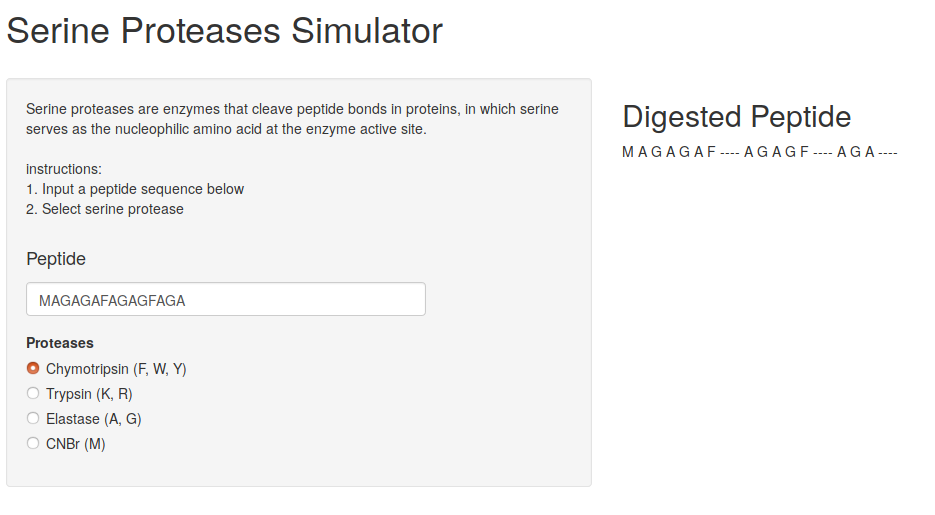
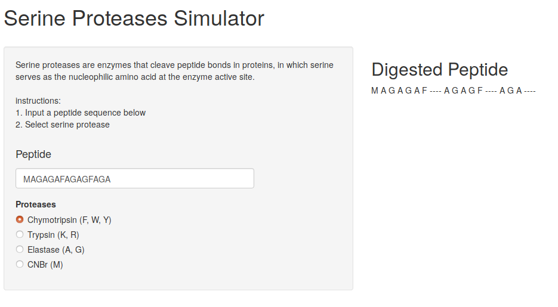

This is a web aplication created in R/Shiny that simulates the digestion of a peptide by serine proteases.
proteases demosource code
Here is a screen shot
Jack Archer
Synthetic biology cultist. In my free time I write code, explore physical computing with Raspberry Pi and drink a lot of coffee. Here you can find some of my fun pet projetcs

Conduct research into biological function of ether glycerophospholipids in eukaryotes.
Conduct research into structural biology of mitochondrial dynamics proteins.
Conduct computational research into evolutionary biology.
This is a web aplication created in R/Shiny that simulates the digestion of a peptide by serine proteases.
proteases demoHere is a screen shot
Meerbot is a Raspberry Pi based three wheel robot. It is powered by 3V motors that allow it to traverse through space. Python library gpio_zero is used to drive the motors. The bot is controlled over wifi with a built-in R/Shiny server.
The name Meerbot stands for the Bionic Meerkat.
video demo
This is a twitter bot written in python. The bot can access random quote from a random book on Project Gutenberg and tweet it.
source code